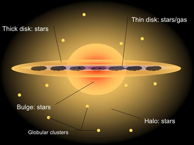

A stellar halo is an essentially spherical population of stars and globular clusters thought to surround most disk galaxies and the cD class of elliptical galaxies. Only about 1% of a galaxy’s stellar mass resides in its halo, and due to this low luminosity, the observation of halos in other galaxies is extremely difficult. In contrast to the thin and thick disk of disk galaxies, the halo generally has no net rotation and is supported almost entirely by velocity dispersion.
The halo stars in the Milky Way are generally old, with most having ages greater than 12 billion years. These ages are similar to those of bulge and globular cluster stars, meaning that stars in the halo were probably among the first Galactic objects to form. Due to its old age, understanding the processes which led to the formation of the stellar halo is key in unravelling the evolutionary history of the Milky Way.
The halo stars of the Milky Way are generally metal-poor, with a metallicity distribution that peaks at around 1/30 of the solar value. The lowest metallicity star found in the Milky Way to date, is a halo star with a metallicity of approximately 1/200,000 of the solar value.